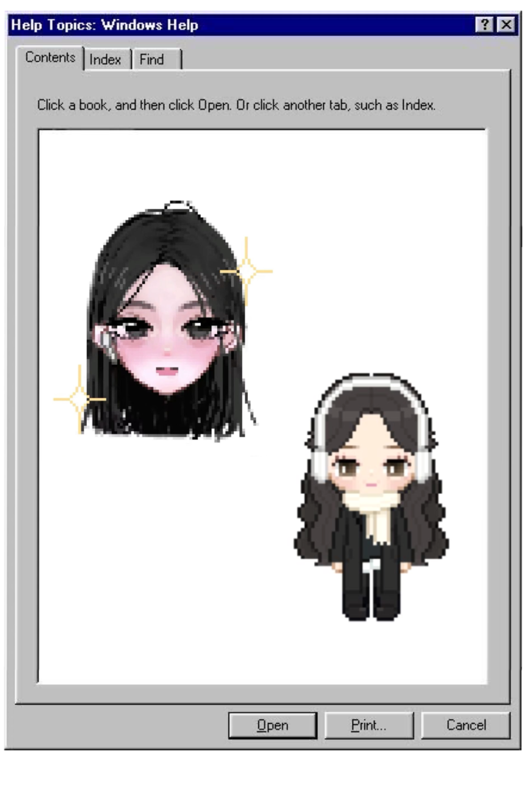

What is ERROR 404?
Welcome to ERROR 404 ! This is a stress-inducing yet educational game. Raising awareness about cyber attacks, ERROR 404 challenges you through a linear round of tasks to save the system! From personal to corporate systems, ERROR 404 provides randomized gameplay mimicking real life situations. Protect your system. Protect yourself. In this game, and in life, every action counts.
Take a break from the game and walk through the different stages of my design and development process. Highlighting the evolution of the project from concept to final design. Hope you enjoy !